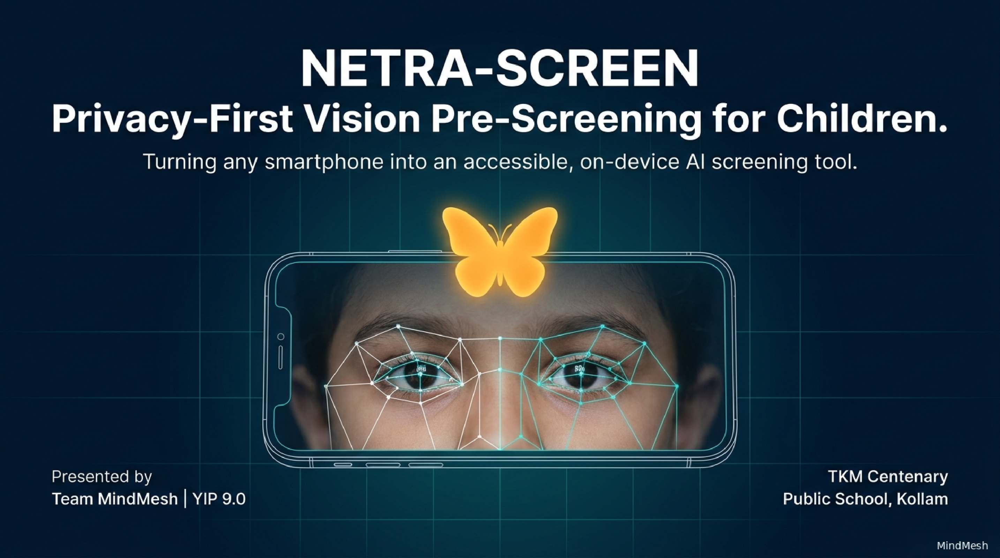
NETRA-SCREEN: Privacy-First Vision Pre-Screening for Children
Turning any smartphone into an accessible, on-device AI screening tool. Created by Team MindMesh (TKM Centenary Public School, Kollam) for YIP 9.0.
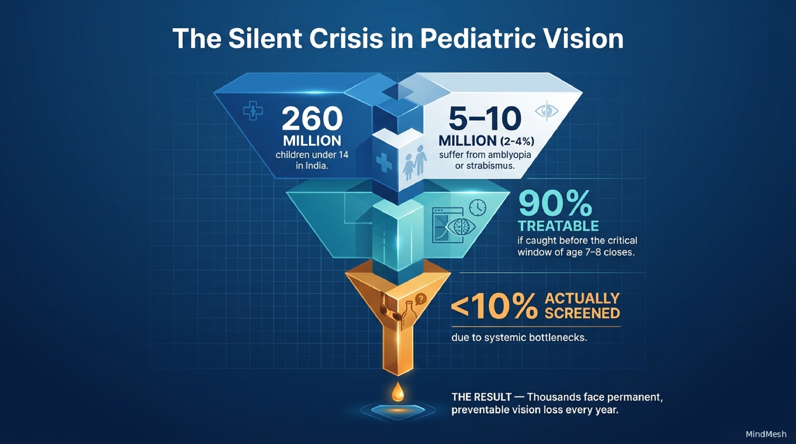
The Silent Crisis in Pediatric Vision
A massive screening gap in India threatens millions of children with permanent, preventable vision loss.
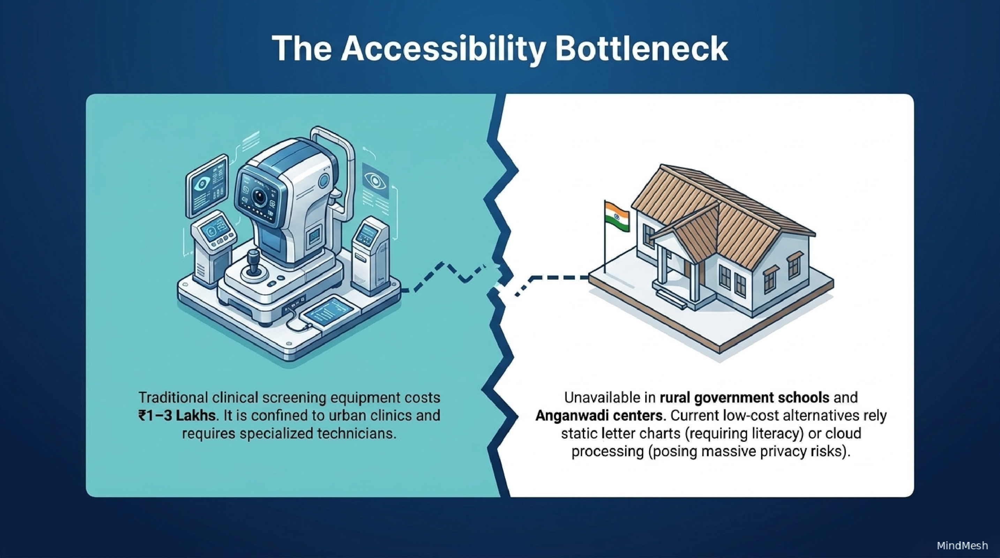
The Accessibility Bottleneck
Why traditional methods fail to reach the children who need them most.
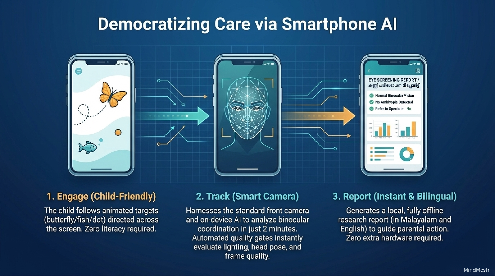
Democratizing Care via Smartphone AI
A 3-step child-friendly pipeline that runs on ordinary smartphones with zero specialized hardware.
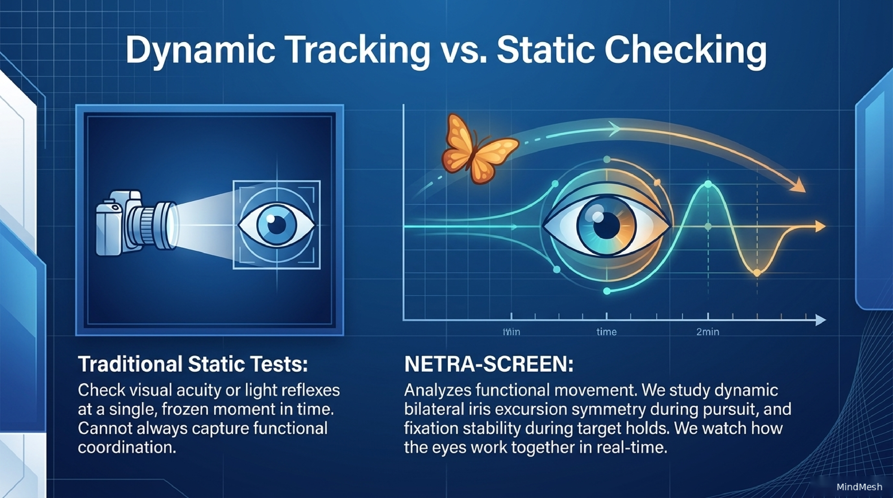
Dynamic Tracking vs. Static Checking
Functional binocular pursuit versus frozen-in-time visual acuity charts.
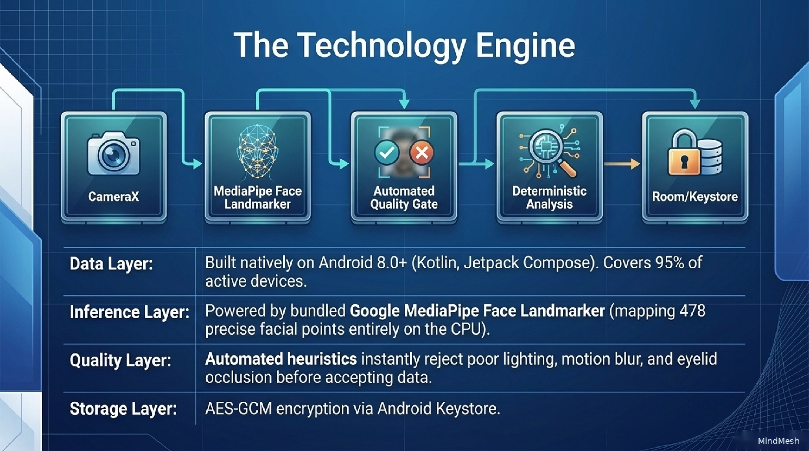
The Technology Engine
A 5-stage deterministic, on-device processing pipeline engineered natively for Android and modern web.
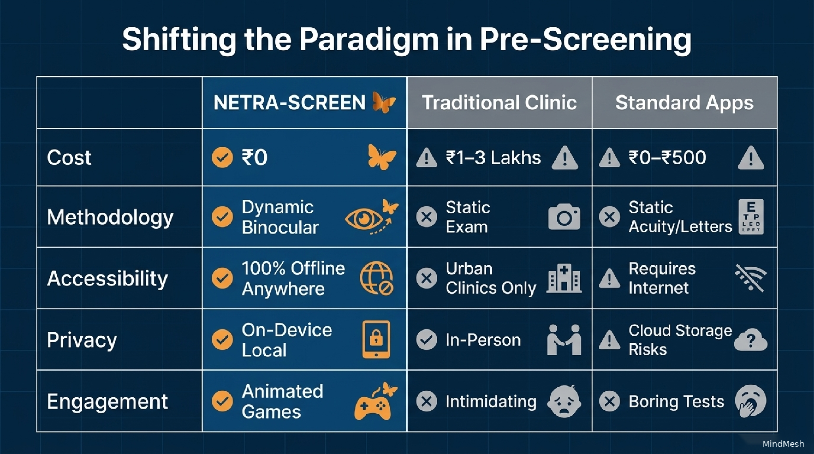
Shifting the Paradigm in Pre-Screening
Direct head-to-head comparison against clinical gold standards and existing commercial vision apps.
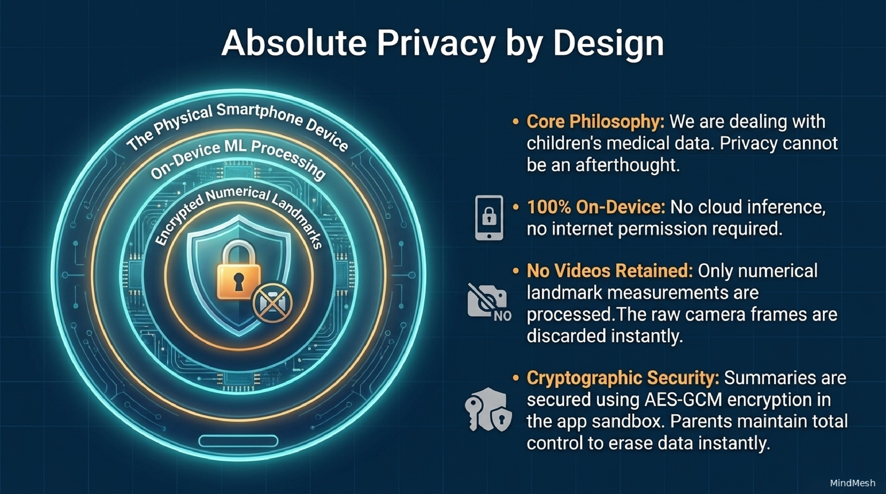
Absolute Privacy by Design
Protecting pediatric biometric data through structural zero-retention architecture.
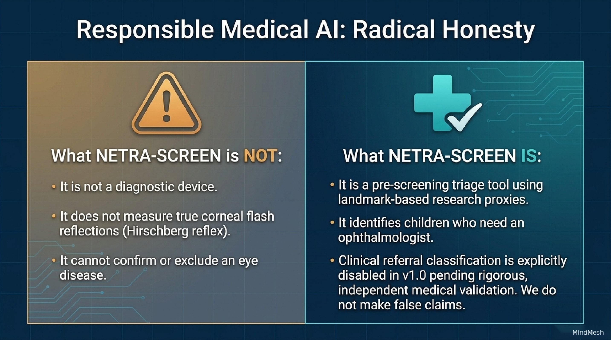
Responsible Medical AI: Radical Honesty
Transparent scientific boundaries that prevent false reassurance and safeguard child health.
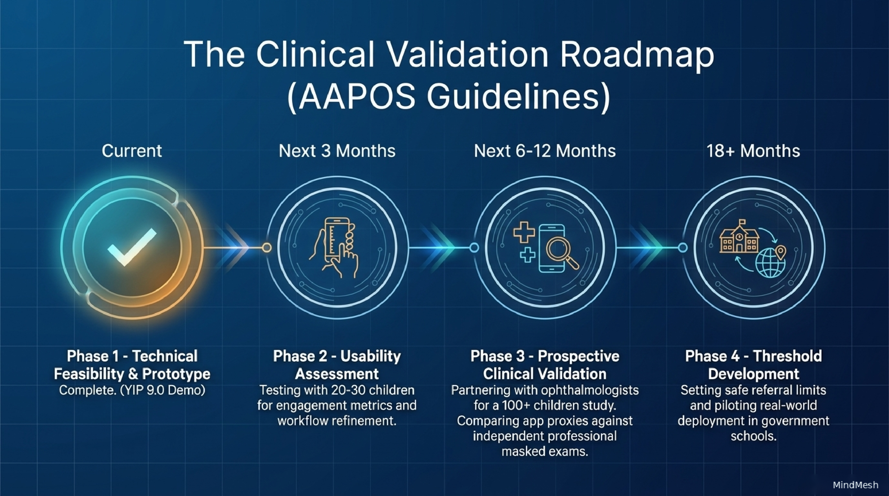
The Clinical Validation Roadmap (AAPOS Guidelines)
Our structured four-stage clinical pathway adhering to pediatric ophthalmology standards.
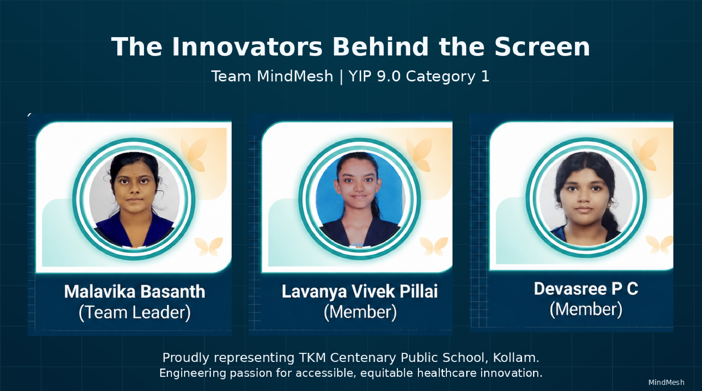
The Innovators Behind the Screen
Team MindMesh | YIP 9.0 Category 1 · TKM Centenary Public School, Kollam
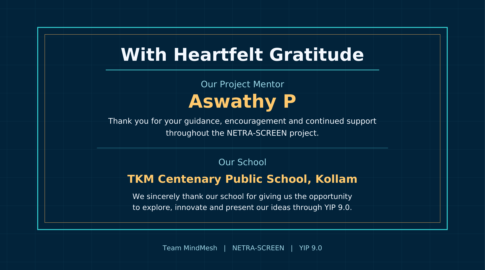
With Heartfelt Gratitude
Acknowledging the guidance and institutional support that made this innovation possible.
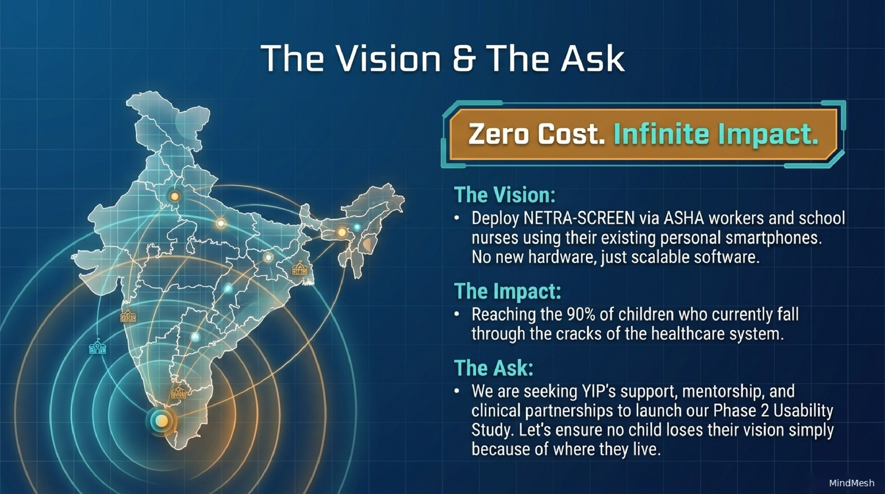
The Vision & The Ask
Zero Cost. Infinite Impact.